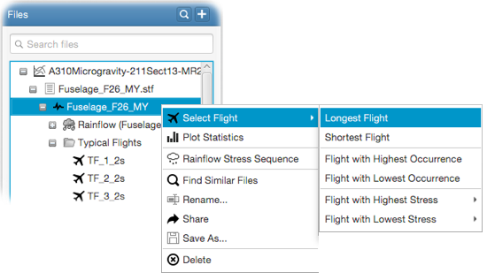

Special typical flights are considered as the longest or shortest flights, flights with the highest or lowest
validity and flights with the maximum or minimum stresses, respectively.These flights can be quickly picked from within the
file tree. Right-click on a spectrum item and select a special flight from the - Select Flight
sub-menu (see figure
below). The flight will be selected in the file tree for further processing.
